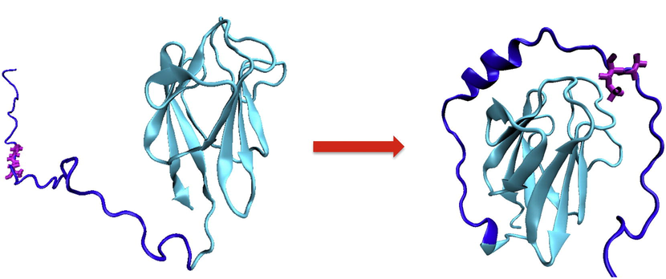

Los ácidos nucleicos y las proteínas son las dos macromoléculas biológicas más importantes. Ambas son los canales principales de los flujos de información genómica dentro de la célula, que convierten en acciones moleculares el legado genético acumulado. Sabemos que el ácido desoxirribonucleico (ADN) puede guardar información genética a largo plazo, mientras que el ácido ribonucleico (ARN) lo hace normalmente a muy corto plazo. Son las proteínas, y algunas clases especiales de ARN, quienes convierten en el contexto celular esa información en acción. Para comprender cómo realizan estas funciones es muy importante tener una idea de su estructura molecular. Esto debemos tenerlo siempre en cuenta en el ámbito bioinformático, donde a veces hablamos de genes y proteínas como entidades abstractas cuya función es sólo un verbo.
La función biológica de estas moléculas está íntimamente ligada a su estructura. Por ejemplo, la estructura en doble hélice del ADN es en si mismo un mecanismo de protección de la información genética, ya que la información está contenida por duplicado, y asimismo es la base de su mecanismo de replicación.
Las macromoléculas naturales deben plegarse, es decir, deben tomar una determinada conformación tridimensional relativamente estable para desempeñar su función biológica. Cuando una macromolécula pierde su estructura tridimensional nativa, normalmente pierde también su función. O al menos antes lo creíamos así. Ahora conocemos cada vez más proteínas intrínsecamente no plegadas, o que sólo se pliegan al unirse a sus ligandos y reducir su entropía (Flock et al., 2014), que desempeñan funciones celulares importantes (Wright & Dyson, 1999). Recientemente hay mucho interés en estudiar estos fenómenos por su relación, todavía no muy clara, con proteínas importantes en medicina como los priones (Sabate et al., 2015).
|

|